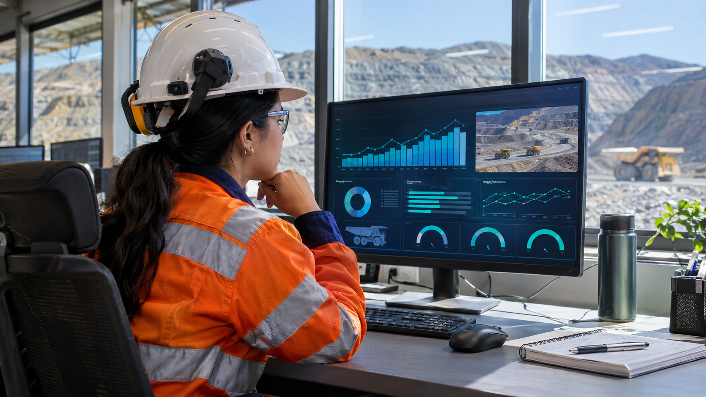
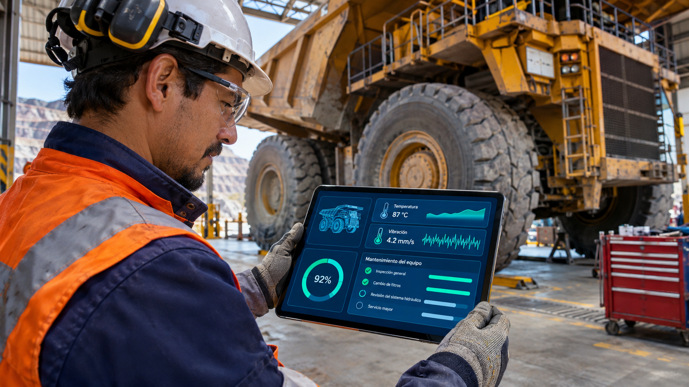
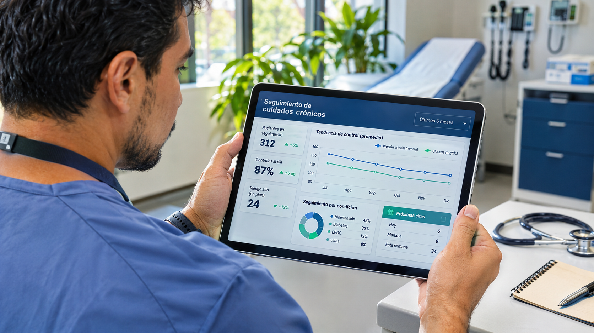
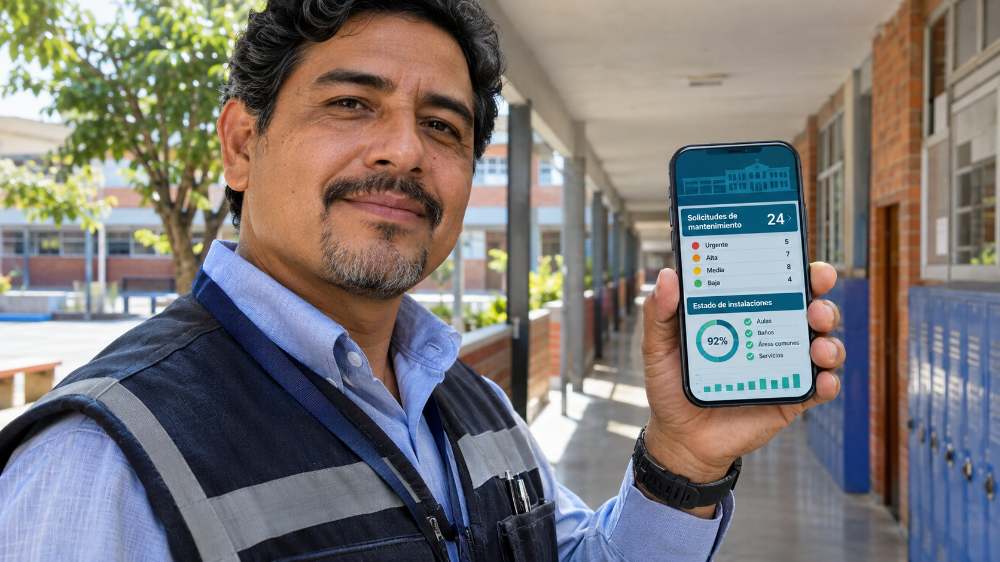
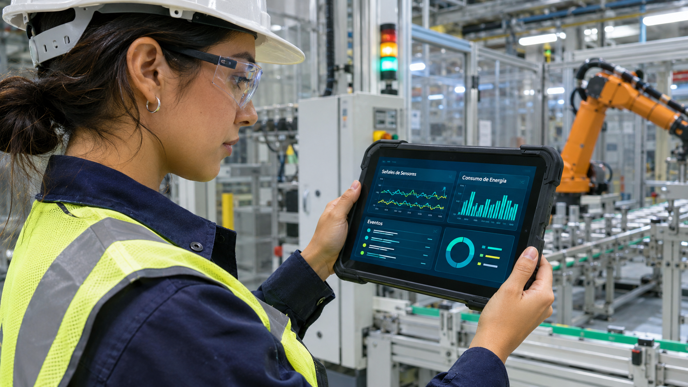
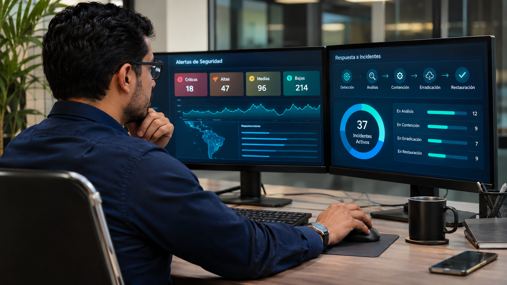
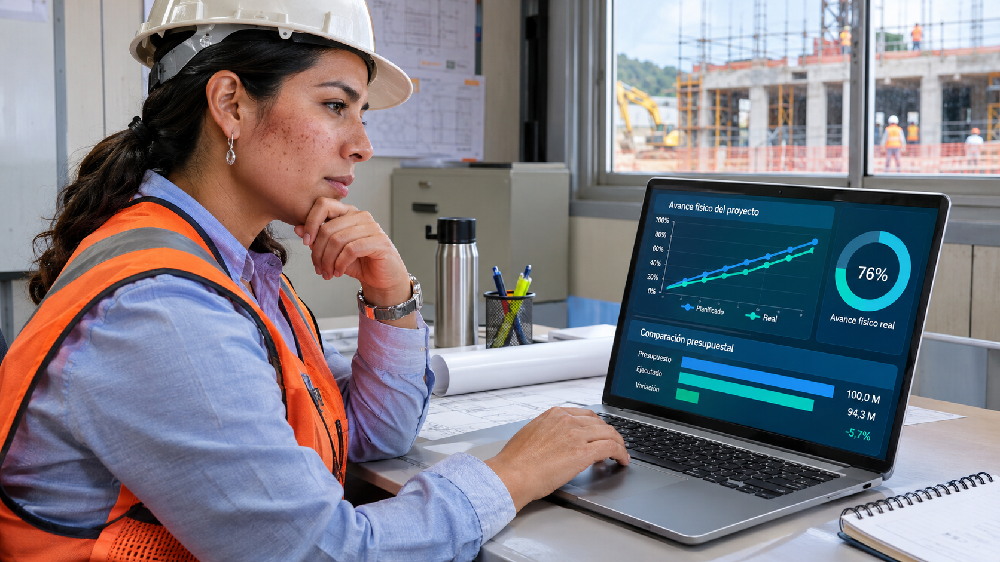
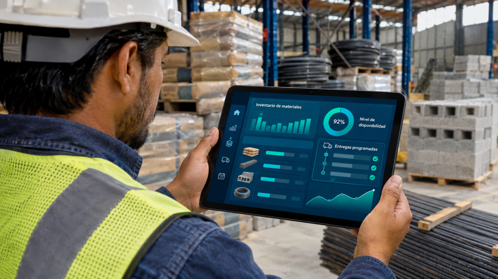
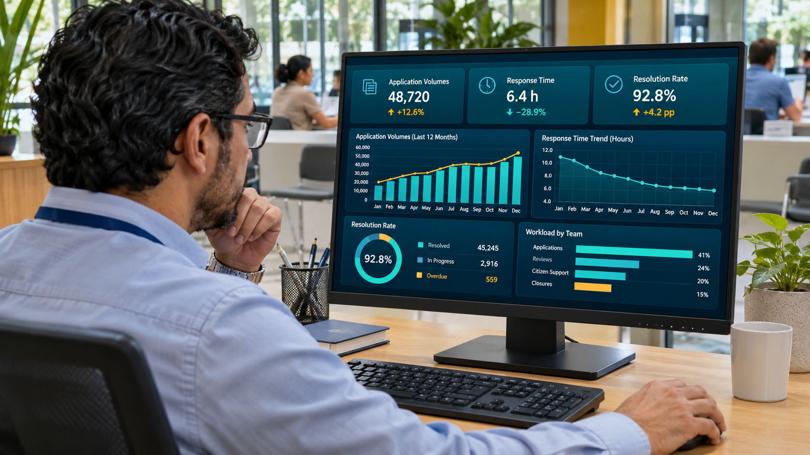

Caso de estudio ·
Imagen sintética por confidencialidad del cliente.
Imágenes generadas con IA: personas, entornos, tableros y cifras son ficticios. No representan instalaciones, datos ni resultados de clientes. Las descripciones presentan el alcance analítico de cada caso.









Imagen sintética por confidencialidad del cliente.